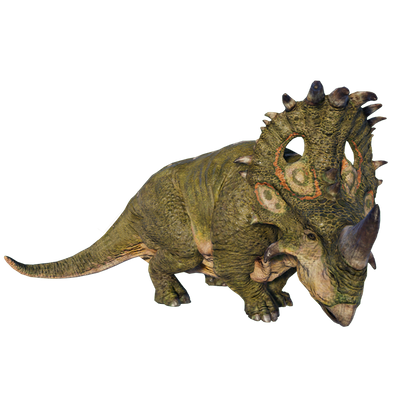

Useful Website
The ceratopsian dinosaur Sinoceratops existed in China around 73m years ago, and is easily identifiable thanks to the large horn on its snout. This genus can grow up to 6m in length and weigh as much as two tonnes, while the eye-catching frill above its neck helps it to attract mates. The name Sinoceratops is derived from its appearance and its environment, translating to ‘Chinese horned face’.
